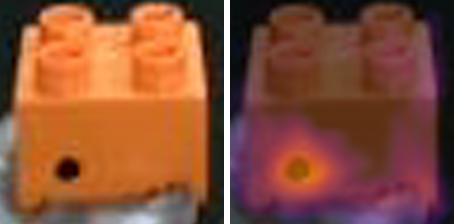
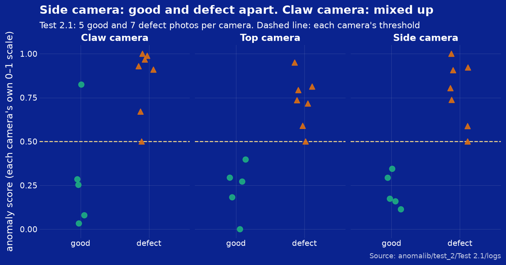
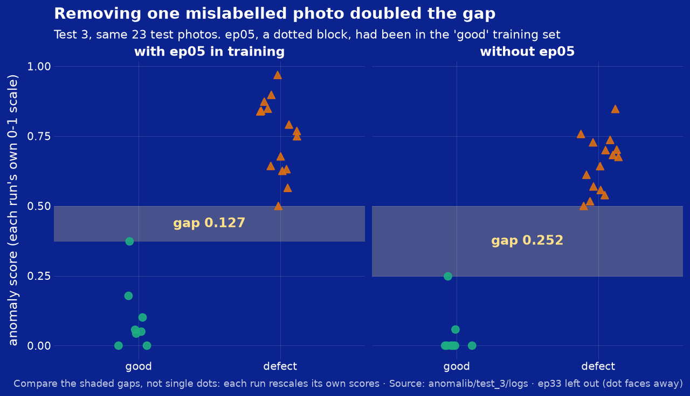
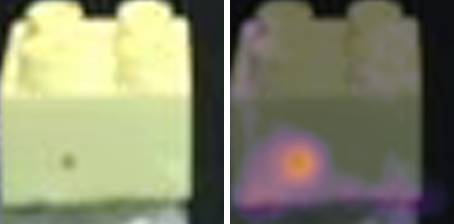
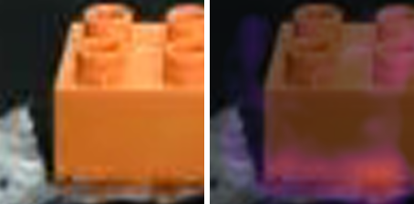

Anomaly Scores
how Adapt spots a defect
What the model sees
Each tile is one block as the model sees it (left) and how unusual each part looks to the model (right). Good blocks stay dark. The bright spot lands on the dot, including on a photo the model had never seen.



One fixed colour scale for every tile, so bright means the same thing in each. Model: PatchCore, Test 3 final.
Made by scripts/make_heatmaps.py.
Where the model sits in the cycle
Every face of the block is photographed and scored before the arm decides where it goes. A defect on the first face doesn't stop the cycle: all four faces are always checked, so the whole inspection is shown.
ARCHITECTURE.md §2.
Choosing the camera
Before looking for dots, we tested all three cameras on the same blocks. The claw camera mixed good and defect scores up; the side camera kept them apart, so the final model uses the side camera.

The threshold: where good ends and defect begins
What it does. The model gives every photo a score: near 0 means it looks like the good blocks it learned from, and higher means stranger. The threshold is the single number that turns a score into a decision. Above 0.37, the block is a defect and goes to the pink bowl. Everything the arm does after the photo depends on which side of that line the score lands.
Why the middle is dangerous. A score isn't fixed. Photograph the same block twice and it moves a little: the light drifts, the camera's exposure changes, the block sits a millimetre to one side. Far from the line, that wobble changes nothing. Close to the line, the same wobble flips a good block to defect, or lets a dot through. So the goal isn't only to get every test photo on the right side. It's to keep every photo as far from the line as possible. Our measure is the distance from the line to the closest photo on each side.
For the statistically minded: if the wobble is roughly normal with spread σ, a photo a distance m from the line flips with probability Φ(−m/σ). That falls off faster than exponentially, so doubling the margin more than halves the risk.
How we pushed scores away from the line.
- The camera: the side camera, chosen above, because its scores didn't overlap.
- The crop: each photo is cut to the block alone (54 × 49 px), so the claw and the background can't add noise.
- Clean training data: one "good" training photo, ep05, had a dot on it. It was teaching the model that dots are normal. Removing it doubled the gap between the closest good block and the closest defect, from 0.127 to 0.252.
- Where the line goes: halfway between the highest-scoring good block (0.248) and the lowest-scoring defect (0.500), so each side gets the same margin, 0.126. Anomalib's default of 0.5 sat exactly on a defect (ep34 scored 0.500), leaving it no margin at all.

Did we just fit the line to our own data? Partly, yes: 0.37 was worked out from Test 3's photos, so Test 3 can't prove it works. That's what Test 4 is for. We wrote down the plan (photos, labels, the 0.37 threshold, and which photo we expected to cause trouble) and committed it before scoring anything. Then we scored 14 photos the model had never seen, once. Every dot was caught (7/7), and 6 of 7 good blocks passed. The closest defect sat 0.094 above the line; the closest passing good block, 0.149 below it.



Sources: anomalib/test_3/findings.md, anomalib/test_4/PLAN.md
(committed before scoring), anomalib/test_4/findings.md.
Limits
Small numbers: 24 photos in Test 3 and 14 in Test 4, so one photo moves a rate by 4 to 14 points. Every test ran offline on recorded photos. The final model was never run live on the arm, and its speed was never measured on the robot's laptop. A dot on a face the side camera can't see (ep33) can't be caught by any side-view model.